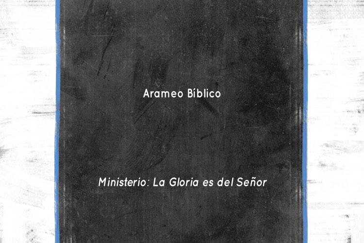

Ministerio
"La Gloria es del Señor"
Explorando el Hebreo, Arameo y Griego para conocer la profundidad de la Palabra de Dios en sus textos originales.
El conocimiento de los idiomas originales nos permite apreciar las Escrituras con mayor profundidad y precisión.
Los textos bíblicos fueron escritos originalmente en tres idiomas principales: Hebreo, Arameo y Griego. Comprender estos idiomas es fundamental para una interpretación más precisa y profunda de las Escrituras, ya que cada uno tiene características únicas que aportan matices que a menudo se pierden en la traducción.
El estudio de los idiomas originales nos permite:
"La hierba se seca, la flor se marchita, pero la palabra del Dios nuestro permanece para siempre."
Isaías 40:8
Cada uno de estos idiomas tiene características únicas que nos permiten comprender mejor el mensaje bíblico.
El idioma principal del Antiguo Testamento, caracterizado por su profundidad simbólica y su estructura verbal dinámica que refleja acción y relación.
Este idioma semítico es la clave para entender la visión del mundo israelita y las profundas conexiones teológicas del Antiguo Testamento.
Explorar el Hebreo
Presente en partes del libro de Daniel y Esdras, el Arameo fue la lengua franca del Antiguo Oriente Próximo y el idioma cotidiano en tiempos de Jesús.
Entender el Arameo nos ayuda a comprender mejor el contexto cultural en el que vivió Jesús y las expresiones que utilizaba.
Descubrir el ArameoEl idioma del Nuevo Testamento, conocido como Griego "común", fue el lenguaje internacional de comunicación en el mundo mediterráneo del siglo I.
Su precisión y riqueza expresiva permitieron que el mensaje cristiano se transmitiera con claridad por todo el mundo antiguo.
Estudiar el GriegoLa lengua del Antiguo Testamento y del pueblo de Israel
El Hebreo Bíblico es una lengua semítica caracterizada por su sistema de escritura consonántico y su rica estructura verbal. Algunas características importantes incluyen:
El Hebreo original se escribía solo con consonantes. Las vocales fueron añadidas posteriormente mediante un sistema de signos diacríticos para facilitar la lectura.
La mayoría de las palabras hebreas se derivan de raíces de tres consonantes, que llevan un significado básico modificado por patrones vocálicos y prefijos/sufijos.
El sistema verbal hebreo enfatiza la acción y el aspecto (completo/incompleto) más que el tiempo (pasado/presente/futuro) como en nuestras lenguas modernas.
El Hebreo es rico en imágenes concretas, metáforas y paralelismos, reflejando una visión del mundo tangible y relacional más que abstracta.
El idioma de partes de Daniel y Esdras, y la lengua materna de Jesús
El Arameo es una lengua semítica estrechamente relacionada con el Hebreo, que se convirtió en la lingua franca del Antiguo Oriente Próximo. En la Biblia, encontramos pasajes en Arameo en:
Jesús habló Arameo como lengua materna, y algunas de sus palabras originales se preservan en los Evangelios:
La lengua del Nuevo Testamento y del mundo helenístico
El Griego Koiné ("común") era el idioma internacional del mundo mediterráneo en el siglo I. Todo el Nuevo Testamento fue escrito en este idioma, que tiene características que lo hacen especialmente adecuado para expresar conceptos teológicos complejos:
El Griego tiene un sistema de tiempos verbales y casos nominales muy preciso que permite expresar matices teológicos con gran exactitud.
Su rico vocabulario permitió a los escritores del Nuevo Testamento expresar conceptos teológicos complejos y abstractos con precisión.
Como idioma internacional, el Griego Koiné permitió que el mensaje del Evangelio se difundiera rápidamente por todo el mundo mediterráneo.
La estructura del Griego Koiné ha influido profundamente en el vocabulario teológico y filosófico occidental hasta nuestros días.
"Nunca se apartará de tu boca este libro de la ley, sino que de día y de noche meditarás en él, para que guardes y hagas conforme a todo lo que en él está escrito; porque entonces harás prosperar tu camino, y todo te saldrá bien."
Josué 1:8
Herramientas y referencias esenciales para el estudio de los idiomas bíblicos
Portal completo con múltiples versiones bíblicas, herramientas de estudio, concordancias y recursos para profundizar en la Palabra de Dios.
Visitar SitioCompara versículos en diferentes versiones y lenguas originales lado a lado. Ideal para estudios comparativos y análisis de traducciones.
Comparar VersionesAnálisis detallado del Tetragrámaton (YHWH), el nombre de Dios en hebreo. Incluye definiciones, concordancia y referencias bíblicas.
Explorar LéxicoSerie de lecciones para aprender el alfabeto, vocabulario básico y primeras estructuras gramaticales del hebreo bíblico.
Ver CursoCurso integral de griego del Nuevo Testamento. Aprende desde las bases hasta la traducción de pasajes completos.
Ver PlaylistIntroducción al arameo bíblico, sus características y comparación con el hebreo. Incluye análisis de textos de Daniel y Esdras.
Ver Lecciones